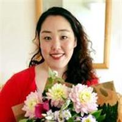
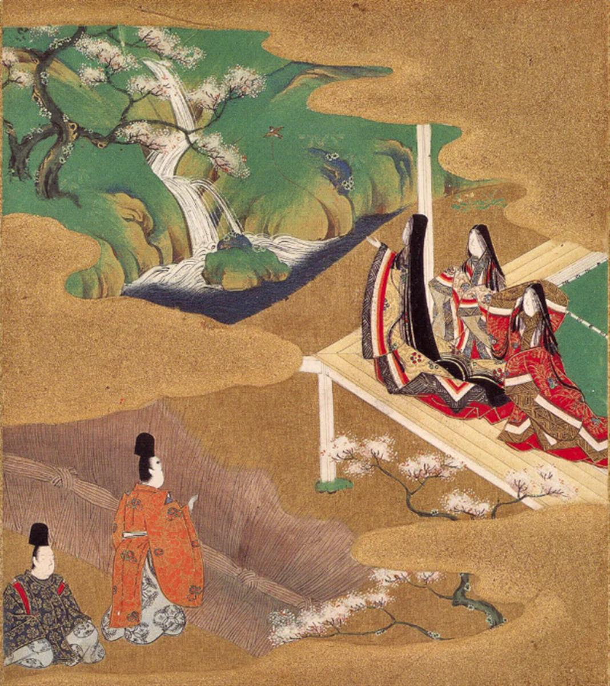
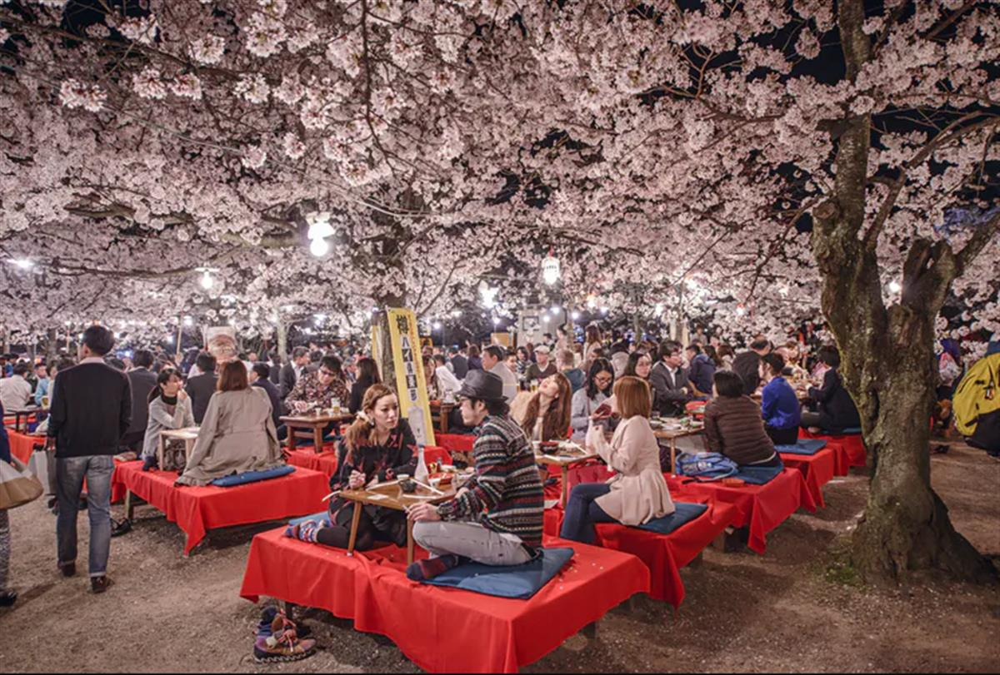

Author

Lecturer in Japanese Studies (Japanese and Comparative Literature), University of Sheffield
Japan’s cherry blossom viewing parties – the history of chasing the fleeting beauty of sakura
March 30, 2021 2.11pm BST
As a lecturer in Japanese studies, the first questions I ask my students is: “What sort of images come to mind when you think of Japan?” The answers usually include advanced technologies, red shrine gates, anime and great food – such as sushi, ramen and so on. They also often say a landscape awash in a gentle pink with sakura cherry blossom.
Each spring, cherry blossoms grace Japan with colour for a brief and beautiful moment. Such is the fleeting nature of this eagerly anticipated yearly phenomenon that most Japanese news channels cover the flowering. The Japan Meteorological Agency also issues a full-bloom forecast, which follows the blooming as it starts from the south and spreads across the north of Japan. This way no one misses out.
The full bloom of the cherry blossom happens from late March to April. It is a season of many changes in Japan – including graduation and entrance ceremonies to schools – so there are many reasons to celebrate. At this time, people take a moment to appreciate the brevity of spring and its beauty, with the blooming and falling of cherry blossom.
The impermanence of things
Once people know when the blooming will be in their area, it is custom to start organising picnic parties for hanami (flower viewing). This could be a picnic in a bento box with rice balls and fried chicken, or oden, which is a hotpot with white radish, fried tofu, fish cakes and eggs, cooked on a camping stove. People often have these with cans of beers or cups of sake (Japanese rice wine).

Illustration of sakura in Japan’s most celebrated work of literature, Jap by Murasaki Shikibu. Wikimedia{kind=link}
The custom of hanami has a long history, starting in the Nara period (710 to 794) with flower-viewings of plum blossoms. The fragrance of the plum flower indicates the arrival of spring, and it played an important role in court cultures in the Heian period (794-1185).
The plum flower was commonly used as a theme in poetry competitions in the court. This can be seen in the use of plum-blossom imagery in famous works such as The Tale of Genji by Murasaki Shikibu (Lady Purple), which dates from the 11th century and has been heralded as the world’s first novel.
Along with plum, appreciation of sakura also grew in the Heian period in a form of poetry known as waka. Translating as “Japanese Song”, waka is arranged in five lines, of five/seven/five/seven/seven syllables. In Kokin-Waka-Shū, the first imperial anthology of Japanese poetry, there is a sustained focus on the beauty of the cherry blossom. For example, a poem by Ariwara no Narihira in the collection reads as follows:
If ours were a world
where blossoming cherry trees
were not to be found,
what tranquillity would bless
The human heart in springtime!
In Narihira’s poem, rather than finding the blossoms peaceful, we are told it disrupts our tranquillity. This is the very idea of mono no aware, a sense of appreciating the brief “perishable beauty” of nature and human emotion. Then and now, the circulation and appreciation of images of cherry blossom seem to be strongly associated with this Japanese aesthetic.
Mono no aware translates as a “sensitivity to things”. According to historian Paul Varley, you can observe this aesthetic from one of the compilers of the Kokin-Waka-shū, the waka poet Ki no Tsurayuki in his preface. It is “the capacity to be moved by things, whether they are the beauties of nature or the feelings of people”.
This sense of appreciating nature – petals falling on the ground along with the change of people’s lives, the delightfulness and gentle excitement of it all – is closely connected with the perishing of the moment, and decay. With this comes the emotion of melancholy. As Ki no Tsurayuki puts it in his preface, we are “startled into thoughts on the brevity of life”.
Varieties of sakura
The current pervasive image of the landscape of Japanese cherry blossom is in a way constructed and has changed through history and culture. Pictures of cherry blossom often depict one type of blossom, somei-yoshino, which is faded pink with light petals.
There were many varieties of blossom before this, however, including regional variations. Across Japan, one very early type of blossom was mountain cherry blossom, yamazakura, which was often the focus of cherry blossom imagery, strongly associated with the mountain deity, and spiritual symbolism.

A Hanami flower-viewing party in Tokyo, Japan. Travelpixs/ShutterstockIn contemporary Japan, however, somei-yoshino can be encountered throughout the country. This variety was cultivated during the late Edo period (1603-1868) by a gardener in Somei, Tokyo, who crossed two species to produce a blossom that was easy to plant and fast to grow. Somei-yoshino began to be planted across Japan during the Meiji period (1868-1912), as part of a big push to plant flowers across the country.
SOURCE: THE CONVERSATION